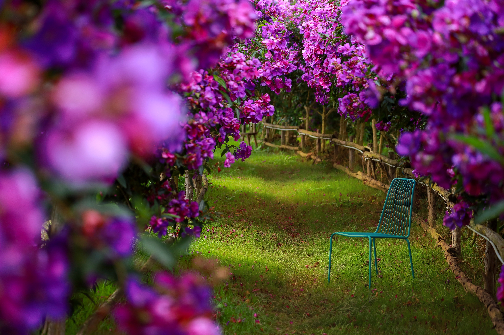
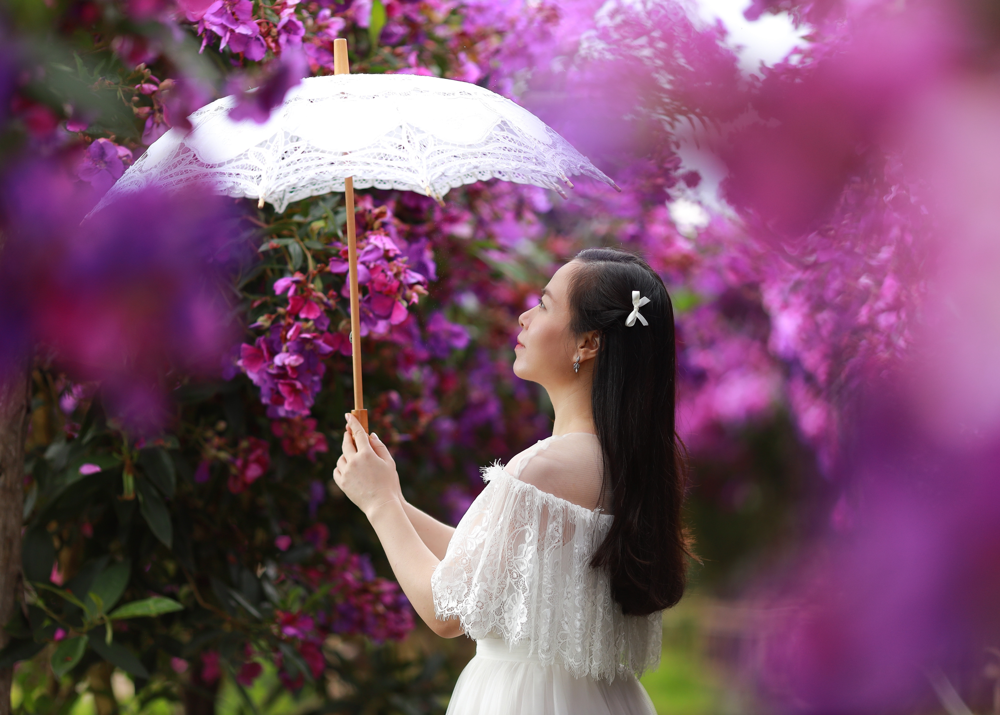
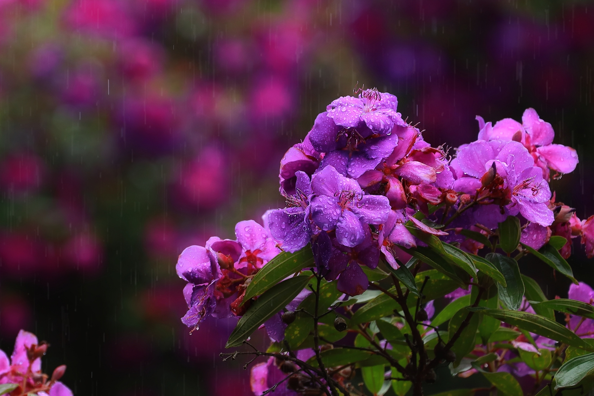
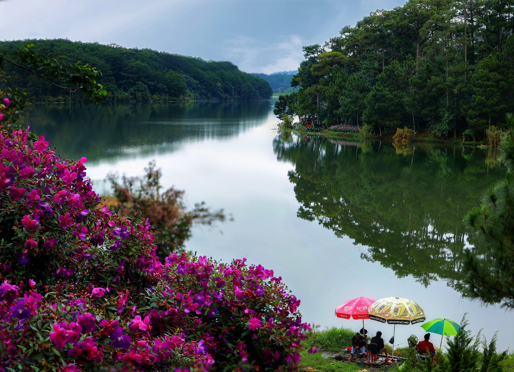
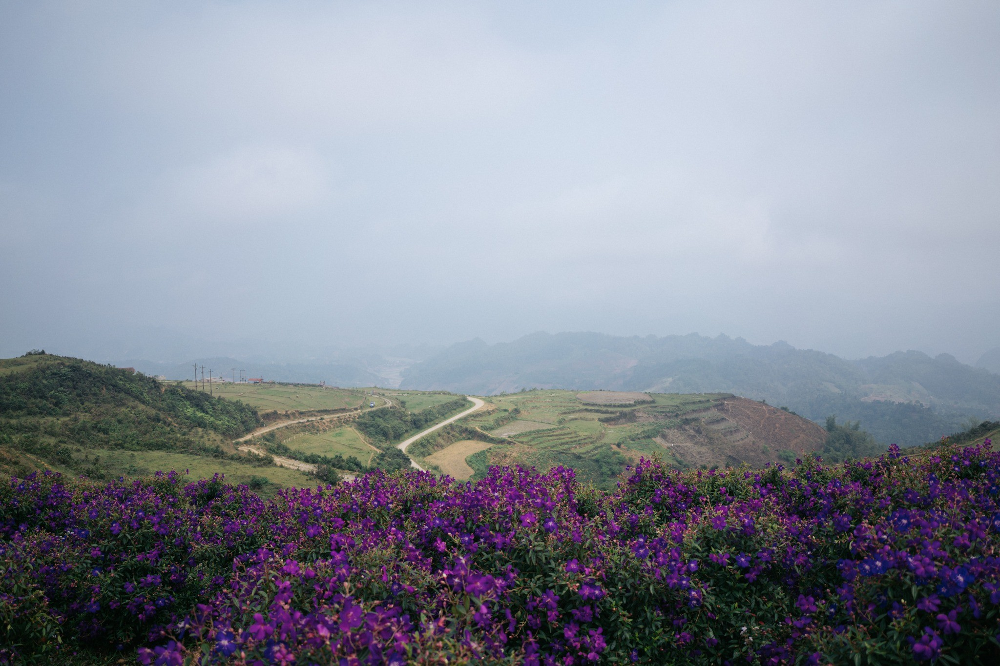
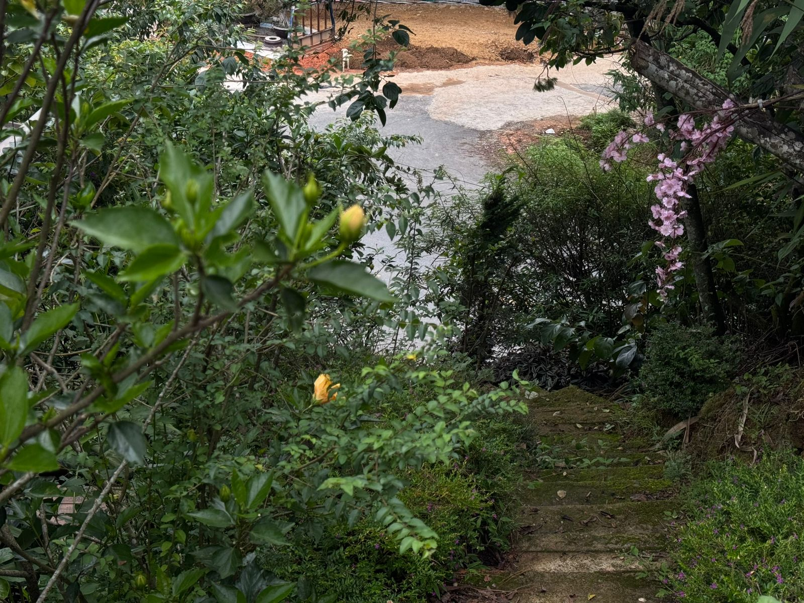

Chào mừng bạn đến với The Myrtle Homes, nơi chúng tôi gói trọn nét mộc mạc, bình yên của thiên nhiên vào từng không gian sống. Đúng như tên gọi của mình, nguồn cảm hứng lớn nhất của chúng tôi được khơi nguồn từ Rose Myrtle — đóa hoa sim tím mang vẻ đẹp hoang dại mà thủy chung của đại ngàn.
Sắc Tím Son Sắt
Giữa Lòng Thiên Nhiên

Không kiêu sa như hồng nhung, không rực rỡ như dã quỳ, hoa sim tím (Rose Myrtle) chọn cho mình một lối đi riêng — âm thầm, bền bỉ nhưng đầy cuốn hút.
Những cánh hoa mỏng manh mang sắc tím hồng dịu dàng, ôm lấy chùm nhụy vàng rực rỡ, thường nở rộ trên những sườn đồi đầy nắng gió. Giữa đất trời rộng lớn, sắc sim tím hiện lên như một nét chấm phá lãng mạn, gợi nhắc về sự bình an và lòng thủy chung son sắt.


"Giữa đất trời rộng lớn, sắc sim tím hiện lên như một nét chấm phá lãng mạn, gợi nhắc về sự bình an và lòng thủy chung son sắt."
Biểu Tượng Của Sức Sống
Mãnh Liệt & Sự Chân Thành
Đằng sau vẻ ngoài có phần e ấp là một sức sống vô cùng mãnh liệt. Cây sim có thể sinh trưởng ở những vùng đất cằn cỗi, chắt chiu từng giọt sương lành để dâng hiến cho đời những mùa hoa rực rỡ và những chùm quả ngọt lành.
Trong văn hóa phương Đông lẫn phương Tây, Rose Myrtle (Hoa kim nương/Hoa sim) luôn là biểu tượng của:
- Tình yêu vĩnh cửu — bền bỉ như cây sim qua bốn mùa
- Sự may mắn — mang lại điều tốt lành cho gia chủ
- Thịnh vượng — sinh sôi nảy nở nơi vùng đất mới
- Lòng hiếu khách chân thành — như cách sim tím chào đón mỗi bước chân lữ khách

Cảm Hứng
Tại The Myrtle Homes
Tại The Myrtle Homes, chúng tôi mượn hình ảnh hoa sim tím để định hình cho phong cách sống của mình: Tự nhiên, ấm áp và bền vững.
Giống như cách những đóa sim tím xoa dịu tâm hồn người lữ khách bằng sắc màu nhẹ nhàng, mỗi góc nhỏ tại The Myrtle Homes đều được chăm chút để mang lại cho bạn cảm giác thân thuộc, thư thái tối đa sau những bộn bề của cuộc sống.


Chúng tôi tin rằng, tổ ấm thực sự là nơi ta được hòa mình vào thiên nhiên, tìm thấy sự cân bằng trong tâm hồn và nuôi dưỡng những giá trị hạnh phúc đích thực.
Ảnh: Sam Sam
Hãy ghé thăm The Myrtle Homes để cùng chúng tôi cảm nhận trọn vẹn hơi thở nhẹ nhàng của thiên nhiên và nét duyên dáng từ sắc sim tím Rose Myrtle!
💬 Nhắn Tin Đặt Phòng